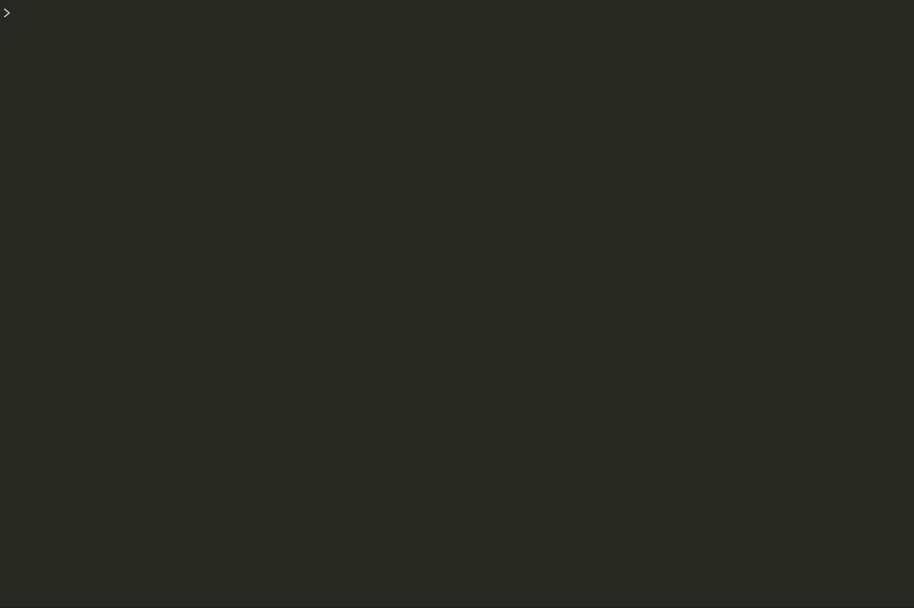

VUnit: a test framework for HDL¶
VUnit is an open source unit testing framework for VHDL/SystemVerilog released under the terms of Mozilla Public License, v. 2.0. It features the functionality needed to realize continuous and automated testing of your HDL code. VUnit doesn’t replace but rather complements traditional testing methodologies by supporting a “test early and often” approach through automation. Read more
